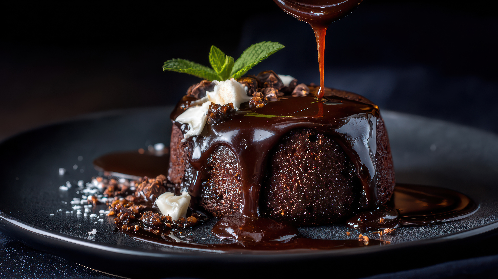

Lava Cake Recipe
This is a delicious lava cake recipe that you can try at home. Follow the steps below to make a perfect lava cake.

Description
Chocolate Lava Cake is a rich and delicious dessert loved by chocolate lovers. It has a soft cake-like outer layer and a warm, melted chocolate center that flows out when the cake is cut. It is prepared using dark chocolate, butter, eggs, sugar, and flour. The cake is baked for a short time so that the outside sets while the center remains gooey. Chocolate Lava Cake is best served warm and can be enjoyed on its own or with vanilla ice cream.
Ingredients
- Dark chocolate
- Butter
- All-purpose flour
- Sugar
- Eggs
- Vanilla extract
- A pinch of salt
Steps
- Step 1: Preheat the oven to 425°F (220°C).
- Step 2: Melt the dark chocolate and butter together in a microwave or on the stovetop.
- Step 3: In a separate bowl, whisk together the flour, sugar, eggs, vanilla extract, and salt.
- Step 4: Combine the melted chocolate mixture with the dry ingredients and mix until just combined.
- Step 5: Pour the batter into greased ramekins.
- Step 6: Bake for 12-15 minutes until the edges are set but the center is still soft.
- Step 7: Let the cakes cool for a minute before serving.